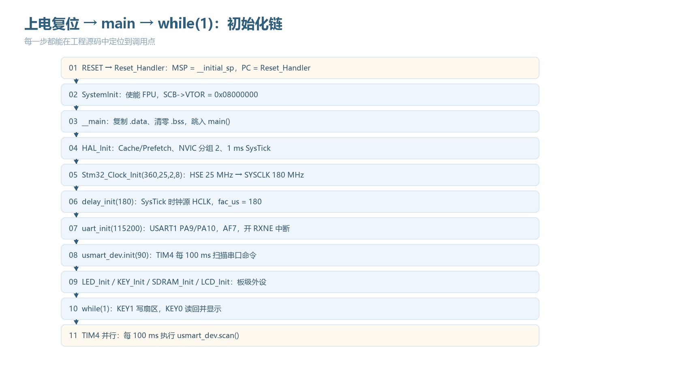
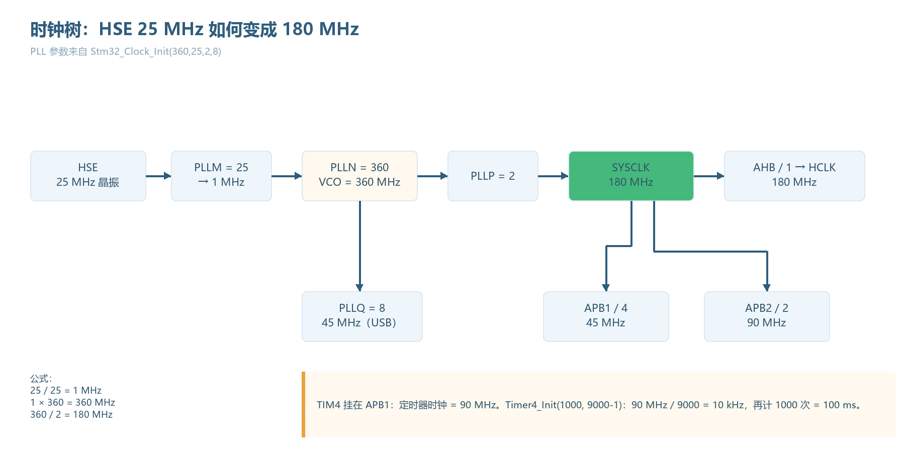
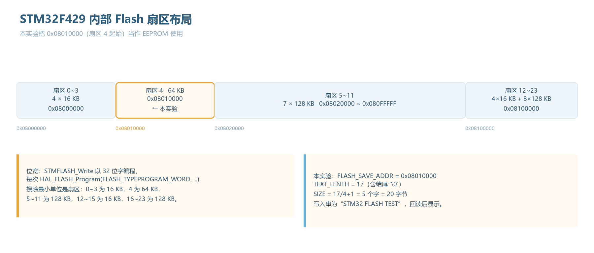
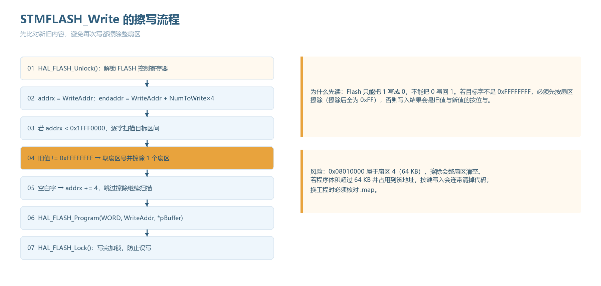
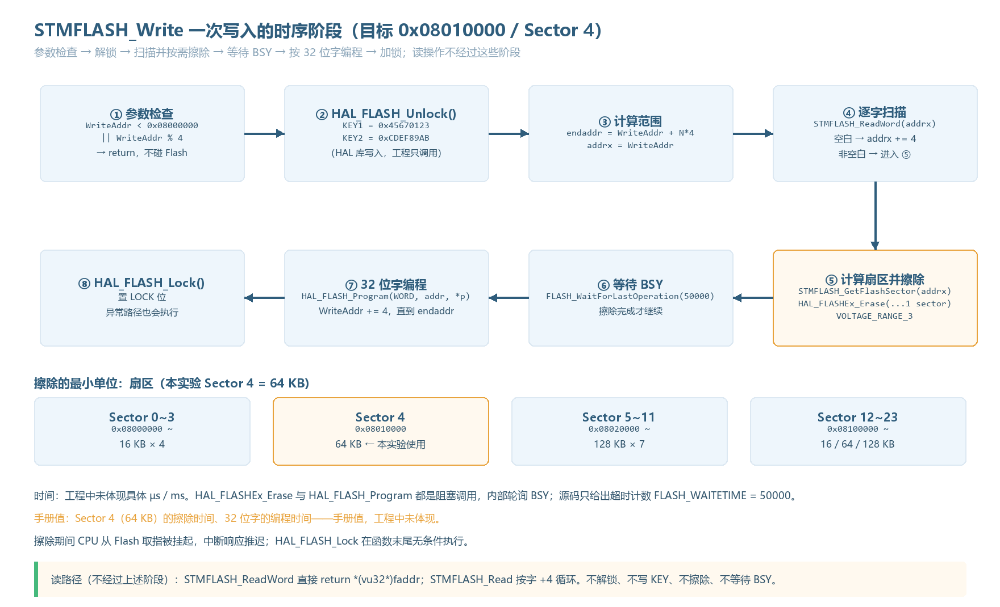
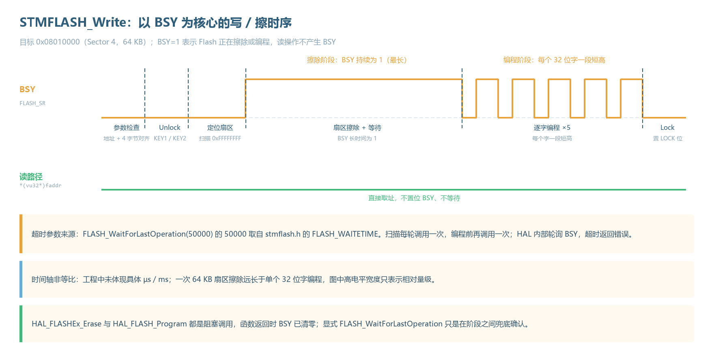
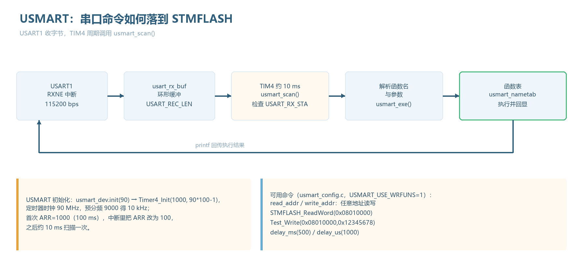

01 实验目标与硬件资源
本实验没有外部存储芯片，而是把 STM32F429 内部 Flash 的第 4 扇区当作 EEPROM 使用。按下 KEY1 把字符串 "STM32 FLASH TEST" 写进 0x08010000，按下 KEY0 再把它读回并显示。串口工具还能通过 USMART 直接调用读写函数，观察单字读写。
| 资源 | 工程中的落点 | 作用 |
|---|---|---|
| MCU | STM32F429IGT6，2 MB Flash | 程序区 + 模拟 EEPROM 区 |
| 存储地址 | FLASH_SAVE_ADDR = 0x08010000 | 第 4 扇区起始，64 KB |
| 数据长度 | TEXT_LENTH = 17、SIZE = 5 字 | 17 字节字符串按 20 字节对齐写入 |
| 显示 | SDRAM + LCD | 提示与读回内容 |
| 串口 | USART1，PA9/PA10，115200 bps | USMART 命令行 |
| 定时器 | TIM4，10 kHz；首次 100 ms，之后约 10 ms | 周期扫描串口命令 |
| 按键 / LED | KEY1 写、KEY0 读、LED0 心跳 | 交互与状态指示 |
02 目录与文件分工
| 目录 / 文件 | 关键函数 | 在本实验中的职责 |
|---|---|---|
USER/main.c | main() | 初始化、按键分支、写读调用与显示 |
USER/stm32f4xx_it.c | SysTick_Handler() | 只做 HAL_IncTick() |
USER/stm32f4xx_it.c | TIM4_IRQHandler() | 调用 usmart_dev.scan() |
CORE/startup_stm32f429xx.s | Reset_Handler | 栈堆、向量表、跳 SystemInit / __main |
USER/system_stm32f4xx.c | SystemInit() | 开 FPU、设置 VTOR |
SYSTEM/sys/sys.c | Stm32_Clock_Init() | HSE 25 MHz → PLL → 180 MHz |
SYSTEM/usart/usart.c | uart_init、USART1_IRQHandler | 115200 bps 与命令接收缓冲 |
HARDWARE/STMFLASH/stmflash.c | STMFLASH_Write/Read/ReadWord | 解锁、擦除、编程、加锁 |
USMART/usmart.c | usmart_init/scan/cmd_rec/exe | TIM4 周期扫描与函数分发 |
USMART/usmart_config.c | usmart_nametab[] | 注册可调用的函数表 |
HARDWARE/SDRAM、LCD、LED、KEY | 各自 *_Init() | 帧缓存、显示、心跳、按键 |
main.c → stmflash.h（先看扇区地址）→ stmflash.c（再看写流程）→ usmart.c 的 usmart_init 与 Timer4_Init。先建立“地址—扇区—擦除”的概念，再看 USMART 的命令行，逻辑会清楚很多。03 启动流程总览

usmart_dev.init(90) 紧跟 uart_init(115200)，因为它要用到串口缓冲；同时它内部会启动 TIM4，首次 100 ms 后把 ARR 改为 100，之后约每 10 ms 扫描一次命令行。这一步放在 LCD 之前，是为了让命令通道在界面出现前就可用。
int main(void)
{
u8 key=0;
u16 i=0;
u8 datatemp[SIZE]; // 20 字节读回缓冲
HAL_Init(); // Cache、NVIC 分组、1 ms SysTick
Stm32_Clock_Init(360,25,2,8); // 180 MHz
delay_init(180); // 延时按 180 MHz 校准
uart_init(115200); // USART1
usmart_dev.init(90); // 启动 TIM4，90 MHz 定时器时钟
LED_Init();
KEY_Init();
SDRAM_Init();
LCD_Init();
POINT_COLOR=RED;
LCD_ShowString(30,50,200,16,16,"Apollo STM32F4/F7");
LCD_ShowString(30,70,200,16,16,"FLASH EEPROM TEST");
LCD_ShowString(30,130,200,16,16,"KEY1:Write KEY0:Read");
while(1)
{
...
}
}
usmart_dev.init(90)的参数是“系统时钟 MHz 数”，用于算 TIM4 预分频；本工程 SYSCLK 为 180 MHz，但 TIM4 在 APB1，定时器时钟是 90 MHz。- USMART 必须在串口初始化之后，否则接收缓冲还没有建立。
- Flash 操作本身不依赖 LCD，但按键与结果显示依赖
LCD_Init()，所以放在最后。 - 所有初始化都在
while(1)之前完成，主循环里只做按键判断与读写调用。
04 启动文件与向量表
启动文件 CORE/startup_stm32f429xx.s 定义了栈、堆与向量表。复位时 Cortex-M4 从 0x08000000 取第一字作为 MSP，第二字作为 Reset_Handler。本实验的 datatemp[SIZE] 只有 20 字节，栈压力不大。
Stack_Size EQU 0x00000400 // 栈 1 KB AREA STACK, NOINIT, READWRITE, ALIGN=3 Stack_Mem SPACE Stack_Size __initial_sp Heap_Size EQU 0x00000200 // 堆 512 B AREA RESET, DATA, READONLY EXPORT __Vectors __Vectors DCD __initial_sp // 第 0 项：初始 MSP DCD Reset_Handler // 第 1 项：复位入口 DCD NMI_Handler DCD HardFault_Handler ...
Reset_Handler PROC
EXPORT Reset_Handler [WEAK]
IMPORT SystemInit
IMPORT __main
LDR R0, =SystemInit
BLX R0 // 先跑 SystemInit
LDR R0, =__main
BX R0 // 再交给 C 库启动代码
ENDP
- 擦除扇区会短暂阻塞 Flash 读取；此时 CPU 从 Flash 取指会被挂起，但栈在 SRAM，不会崩。
__main负责 .data 搬移与 .bss 清零，然后才进入main()。- 向量表第 0 项是 MSP 初值，第 1 项是复位入口，二者由启动文件与链接地址共同决定。
- 只要程序从 0x08000000 链接，
SystemInit就会把 VTOR 指回 Flash 起始地址。
05 SystemInit 与 HAL_Init
SystemInit() 只做底层准备：打开 FPU、设置向量表。HAL_Init() 打开 Cache 与 Prefetch，把 NVIC 分成 2 位抢占 + 2 位子优先级，并配置 1 ms SysTick。本实验的 Flash 操作会调用 HAL 的 FLASH_WaitForLastOperation，依赖的就是这个时基。
void SystemInit(void)
{
RCC->CR |= (uint32_t)0x00000001; // 打开 HSI
RCC->CFGR = 0x00000000;
RCC->CR &= ~(uint32_t)0x01000000; // 关闭 PLL
SCB->CPACR |= ((3UL << 10*2) | (3UL << 11*2)); // CP10/CP11 全访问，开 FPU
#ifdef VECT_TAB_SRAM
SCB->VTOR = SRAM_BASE | VECT_TAB_OFFSET;
#else
SCB->VTOR = FLASH_BASE | VECT_TAB_OFFSET; // 默认 0x08000000
#endif
}
HAL_StatusTypeDef HAL_Init(void)
{
__HAL_FLASH_INSTRUCTION_CACHE_ENABLE(); // I-Cache
__HAL_FLASH_DATA_CACHE_ENABLE(); // D-Cache
__HAL_FLASH_PREFETCH_BUFFER_ENABLE(); // Prefetch
HAL_NVIC_SetPriorityGrouping(NVIC_PRIORITYGROUP_2);
HAL_InitTick(TICK_INT_PRIORITY); // TICK_INT_PRIORITY = 0x0F
return HAL_OK;
}
- 写 Flash 前必须解锁，写完后加锁；这两步在
STMFLASH_Write内部完成，main 不需要关心。 - Flash 擦除与编程是阻塞操作，
FLASH_WaitForLastOperation依靠 SysTick 计时超时。 - Cache 打开后，读 Flash 仍是一致的；写 Flash 后若用 Cache 读同一地址，硬件会按 AXI 规则处理，本实验没有触发该场景。
- NVIC 分组 2 决定 TIM4 与 USART1 中断的优先级解释方式。
06 时钟、延时与串口

void Stm32_Clock_Init(u32 plln,u32 pllm,u32 pllp,u32 pllq)
{
HAL_Init();
RCC_OscInitStruct.OscillatorType = RCC_OSCILLATORTYPE_HSE;
RCC_OscInitStruct.HSEState = RCC_HSE_ON; // 25 MHz 外部晶振
RCC_OscInitStruct.PLL.PLLState = RCC_PLL_ON;
RCC_OscInitStruct.PLL.PLLSource = RCC_PLLSOURCE_HSE;
RCC_OscInitStruct.PLL.PLLM = pllm; // 25
RCC_OscInitStruct.PLL.PLLN = plln; // 360
RCC_OscInitStruct.PLL.PLLP = pllp; // 2
RCC_OscInitStruct.PLL.PLLQ = pllq; // 8
HAL_RCC_OscConfig(&RCC_OscInitStruct);
RCC_ClkInitStruct.SYSCLKSource = RCC_SYSCLKSOURCE_PLLCLK;
RCC_ClkInitStruct.AHBCLKDivider = RCC_SYSCLK_DIV1; // HCLK 180 MHz
RCC_ClkInitStruct.APB1CLKDivider = RCC_HCLK_DIV4; // PCLK1 45 MHz
RCC_ClkInitStruct.APB2CLKDivider = RCC_HCLK_DIV2; // PCLK2 90 MHz
HAL_RCC_ClockConfig(&RCC_ClkInitStruct, FLASH_LATENCY_5);
}
| 量 | 算式 | 结果 |
|---|---|---|
| VCO 输入 | HSE / PLLM = 25 / 25 | 1 MHz |
| VCO 输出 | 1 MHz × PLLN = 1 × 360 | 360 MHz |
| SYSCLK | 360 / PLLP = 360 / 2 | 180 MHz |
| PCLK1 | 180 / 4 | 45 MHz |
| APB1 定时器时钟 | 45 × 2 | 90 MHz（TIM4 基准） |
| PCLK2 | 180 / 2 | 90 MHz（USART1 基准） |
| USB 时钟 | 360 / PLLQ = 360 / 8 | 45 MHz |
延时来自 SYSTEM/delay/delay.c，delay_init(180) 把 fac_us 设为 180；串口是 115200 8N1。printf 通过重写 fputc 落到 USART1，接收侧由 RXNE 中断写入 USART_RX_BUF，这正是 USMART 的命令来源。
void delay_init(u8 SYSCLK)
{
HAL_SYSTICK_CLKSourceConfig(SYSTICK_CLKSOURCE_HCLK);
fac_us = SYSCLK; // 180 MHz → 1 us 需要 180 个周期
}
void uart_init(u32 bound)
{
UART1_Handler.Instance = USART1;
UART1_Handler.Init.BaudRate = bound; // 115200
UART1_Handler.Init.WordLength = UART_WORDLENGTH_8B;
UART1_Handler.Init.StopBits = UART_STOPBITS_1;
UART1_Handler.Init.Parity = UART_PARITY_NONE;
UART1_Handler.Init.Mode = UART_MODE_TX_RX;
HAL_UART_Init(&UART1_Handler);
#if EN_USART1_RX
__HAL_UART_ENABLE_IT(&UART1_Handler, UART_IT_RXNE);
HAL_NVIC_EnableIRQ(USART1_IRQn);
#endif
}
- APB1 分频不为 1 时，定时器时钟自动翻倍：45 MHz × 2 = 90 MHz，这是
usmart_init(90)的由来。 - 180 MHz 需要 5 个 Flash 等待周期，由
FLASH_LATENCY_5指定。 delay_us不依赖中断，可在 Flash 操作前后的短延时里使用。- USART1 中断只负责收字节，不解析命令；解析放到 TIM4 的周期扫描里。
07 Flash 扇区布局与地址选择

stmflash.h 把 24 个扇区的起始地址逐一列出。main.c 选择 0x08010000，即第 4 扇区首地址。源码注释特别提醒：该地址必须是 4 的倍数，且要位于程序占用空间之后，否则擦除会连带清掉代码。
#define STM32_FLASH_BASE 0x08000000 // Flash 起始 #define FLASH_WAITETIME 50000 // 等待超时时间 #define ADDR_FLASH_SECTOR_0 ((u32)0x08000000) // 16 KB #define ADDR_FLASH_SECTOR_1 ((u32)0x08004000) // 16 KB #define ADDR_FLASH_SECTOR_2 ((u32)0x08008000) // 16 KB #define ADDR_FLASH_SECTOR_3 ((u32)0x0800C000) // 16 KB #define ADDR_FLASH_SECTOR_4 ((u32)0x08010000) // 64 KB ← 本实验使用 #define ADDR_FLASH_SECTOR_5 ((u32)0x08020000) // 128 KB #define ADDR_FLASH_SECTOR_6 ((u32)0x08040000) // 128 KB ...
const u8 TEXT_Buffer[]={"STM32 FLASH TEST"};
#define TEXT_LENTH sizeof(TEXT_Buffer) // 含结束符，17 字节
#define SIZE TEXT_LENTH/4+((TEXT_LENTH%4)?1:0)// 17→5 个字，20 字节
#define FLASH_SAVE_ADDR 0X08010000 // 第 4 扇区首地址
| 扇区 | 起始地址 | 大小 | 说明 |
|---|---|---|---|
| Sector 0~3 | 0x08000000 ~ 0x0800FFFF | 各 16 KB | 通常放程序 |
| Sector 4 | 0x08010000 | 64 KB | 本实验的模拟 EEPROM |
| Sector 5~11 | 0x08020000 起 | 各 128 KB | 大容量区 |
| Sector 12~23 | 0x08100000 起 | 16 / 64 / 128 KB | 第二 Bank |
- 擦除的最小单位是“扇区”，不是字节；写 17 字节也要擦掉整个 64 KB 扇区。
0x08010000是 4 的倍数，满足WriteAddr%4的检查。- 如果程序体积超过 64 KB，就会和这个地址重叠；源码注释要求把保存地址放到程序区之后。
TEXT_LENTH用sizeof得到 17（含'\0'），按字向上取整得到 5 个字。
08 读取与写入流程

STMFLASH_ReadWord() 只有一行：把地址强制转换成 vu32* 再解引用。Flash 在 STM32 的地址空间里是可直接读的，因此读操作不需要解锁，也不需要等待。
u32 STMFLASH_ReadWord(u32 faddr)
{
return *(vu32*)faddr; // 直接把地址当指针读 32 位
}
void STMFLASH_Read(u32 ReadAddr,u32 *pBuffer,u32 NumToRead)
{
u32 i;
for(i=0;i<NumToRead;i++)
{
pBuffer[i]=STMFLASH_ReadWord(ReadAddr); // 读一个字
ReadAddr+=4; // 地址 +4
}
}
写流程分四段：参数检查 → 解锁 → 扫描并擦除 → 按字编程 → 加锁。扫描时只要发现目标区间里有任何字不是 0xFFFFFFFF，就擦除该地址所在扇区；擦除后整扇区回到全 1，才允许写入。
void STMFLASH_Write(u32 WriteAddr,u32 *pBuffer,u32 NumToWrite)
{
FLASH_EraseInitTypeDef FlashEraseInit;
HAL_StatusTypeDef FlashStatus=HAL_OK;
u32 SectorError=0;
u32 addrx=0;
u32 endaddr=0;
if(WriteAddr<STM32_FLASH_BASE||WriteAddr%4)return; // 地址非法直接退出
HAL_FLASH_Unlock(); // 解锁 Flash
addrx=WriteAddr;
endaddr=WriteAddr+NumToWrite*4; // 结束地址
if(addrx<0X1FFF0000) // 排除 OTP / 系统区
{
while(addrx<endaddr)
{
if(STMFLASH_ReadWord(addrx)!=0XFFFFFFFF) // 不是空白
{
FlashEraseInit.TypeErase=FLASH_TYPEERASE_SECTORS;
FlashEraseInit.Sector=STMFLASH_GetFlashSector(addrx);
FlashEraseInit.NbSectors=1; // 一次只擦一个扇区
FlashEraseInit.VoltageRange=FLASH_VOLTAGE_RANGE_3;
if(HAL_FLASHEx_Erase(&FlashEraseInit,&SectorError)!=HAL_OK)
{
break;
}
}else addrx+=4; // 空白则继续往后扫
FLASH_WaitForLastOperation(FLASH_WAITETIME);
}
}
...
}
FlashStatus=FLASH_WaitForLastOperation(FLASH_WAITETIME);
if(FlashStatus==HAL_OK)
{
while(WriteAddr<endaddr)
{
if(HAL_FLASH_Program(FLASH_TYPEPROGRAM_WORD,WriteAddr,*pBuffer)!=HAL_OK)
{
break; // 编程异常退出
}
WriteAddr+=4;
pBuffer++;
}
}
HAL_FLASH_Lock(); // 加锁，防止误写
}
把两段代码接起来看，一次 STMFLASH_Write 的时间都花在“擦除等待”和“逐字编程”两个阻塞阶段；地址落在哪个扇区，擦除代价就从哪里开始算。

本实验写入 0x08010000，落在 Sector 4（64 KB），所以即使只写几个字节也要按 64 KB 扇区擦除；读操作则完全绕过这些阶段，直接按地址取数。
把 BSY 单独拉出来看，一次写入只有擦除与逐字编程会让它升高：擦除期间长时间为 1，每个 32 位字编程只产生一段短高，其余阶段都等待或计算。

等待上限来自 FLASH_WAITETIME（50000），读路径则直接用 *(vu32*)faddr 取数，不产生任何 BSY 等待。
- 先扫描再擦除：如果目标区间本来就是空白，就完全跳过擦除，省掉 64 KB 的擦除时间。
- 擦除单位是扇区，写入单位是字（WORD，32 位）；两者粒度不同，不能按字节写。
HAL_FLASHEx_Erase失败只break，函数不返回错误码；调用方无法区分“成功”与“中途失败”。HAL_FLASH_Lock()在函数末尾无条件执行，保证异常退出后 Flash 仍处于保护状态。
09 扇区判定与擦除代价
STMFLASH_GetFlashSector() 用一串 if 把地址映射到扇区号：只要地址小于下一个扇区的起始地址，就属于当前扇区。它覆盖到第 23 扇区，最后一档直接返回 FLASH_SECTOR_23。
u8 STMFLASH_GetFlashSector(u32 addr)
{
if(addr<ADDR_FLASH_SECTOR_1)return FLASH_SECTOR_0;
else if(addr<ADDR_FLASH_SECTOR_2)return FLASH_SECTOR_1;
else if(addr<ADDR_FLASH_SECTOR_3)return FLASH_SECTOR_2;
else if(addr<ADDR_FLASH_SECTOR_4)return FLASH_SECTOR_3;
else if(addr<ADDR_FLASH_SECTOR_5)return FLASH_SECTOR_4; // 0x08010000 落在这里
else if(addr<ADDR_FLASH_SECTOR_6)return FLASH_SECTOR_5;
...
else if(addr<ADDR_FLASH_SECTOR_23)return FLASH_SECTOR_22;
return FLASH_SECTOR_23;
}
| 数量 | 计算 | 结果 |
|---|---|---|
| 字符串长度 | sizeof("STM32 FLASH TEST") | 17 字节（含结束符） |
| 写入字数 | 17 / 4 = 4，余 1 再 +1 | 5 个字 |
| 写入字节 | 5 × 4 | 20 字节 |
| 擦除代价 | Sector 4 | 64 KB |
| 擦除时间 | 与芯片型号、扇区大小、擦写寿命有关 | 以对应芯片数据手册为准 |
- 判断顺序必须从低地址到高地址，否则会把高地址误判成低扇区。
FLASH_SECTOR_4是 64 KB 扇区，写 20 字节也要付出整扇区擦除的代价。- 频繁写同一地址会加速该扇区磨损；真实项目应做磨损均衡或改用外部 EEPROM。
- 擦除期间 CPU 取指会被阻塞，若中断向量表在 Flash 中，中断响应也会被推迟。
10 USMART 与 TIM4 周期扫描

usmart_dev.init(90) 最终调用 usmart_init(90)，内部执行 Timer4_Init(1000, 90*100-1)。TIM4 的时钟是 90 MHz，预分频 8999 后得到 10 kHz，自动重装 1000 后先产生一次 100 ms 中断；中断服务里把 ARR 改成 100，之后约每 10 ms 产生一次更新中断。
void usmart_init(u8 sysclk)
{
#if USMART_ENTIMX_SCAN==1
Timer4_Init(1000,(u32)sysclk*100-1); // 90*100-1 = 8999
#endif
usmart_dev.sptype=1; // 十六进制显示
}
void Timer4_Init(u16 arr,u16 psc)
{
__HAL_RCC_TIM4_CLK_ENABLE();
HAL_NVIC_SetPriority(TIM4_IRQn,3,3); // 抢占 3，子优先级 3
HAL_NVIC_EnableIRQ(TIM4_IRQn);
TIM4_Handler.Instance=TIM4;
TIM4_Handler.Init.Prescaler=psc; // 8999 → 10 kHz
TIM4_Handler.Init.CounterMode=TIM_COUNTERMODE_UP;
TIM4_Handler.Init.Period=arr; // 1000 → 首次 100 ms
TIM4_Handler.Init.ClockDivision=TIM_CLOCKDIVISION_DIV1;
HAL_TIM_Base_Init(&TIM4_Handler);
HAL_TIM_Base_Start_IT(&TIM4_Handler);
}
void TIM4_IRQHandler(void)
{
if(__HAL_TIM_GET_IT_SOURCE(&TIM4_Handler,TIM_IT_UPDATE)==SET)
{
usmart_dev.scan(); // 扫描并执行命令
__HAL_TIM_SET_COUNTER(&TIM4_Handler,0);
__HAL_TIM_SET_AUTORELOAD(&TIM4_Handler,100);
}
__HAL_TIM_CLEAR_IT(&TIM4_Handler, TIM_IT_UPDATE);
}
函数表在 usmart_config.c 中注册。本实验可用的条目包括 delay_ms、delay_us、STMFLASH_ReadWord 与 Test_Write，因此可以在串口里直接输入 Test_Write(0X08010000,0X12345678) 这样的命令。
struct _m_usmart_nametab usmart_nametab[]=
{
#if USMART_USE_WRFUNS==1
(void*)read_addr,"u32 read_addr(u32 addr)",
(void*)write_addr,"void write_addr(u32 addr,u32 val)",
#endif
(void*)delay_ms,"void delay_ms(u16 nms)",
(void*)delay_us,"void delay_us(u32 nus)",
(void*)STMFLASH_ReadWord,"u32 STMFLASH_ReadWord(u32 faddr)",
(void*)Test_Write,"void Test_Write(u32 WriteAddr,u32 WriteData)",
};
- 预分频写成
sysclk*100-1，传 90 就得到 8999；如果传 180，定时频率会差一倍。 - TIM4 中断先以 100 ms 触发一次，随后把 ARR 改为 100，约每 10 ms 执行一次
usmart_dev.scan()，命令的解析与执行都在中断上下文里完成。 usmart_dev.scan()执行用户函数时仍处于中断中，函数里不能长时间阻塞，否则会影响 SysTick 与串口。- 函数表里的字符串既是帮助信息，也是参数类型解析依据；改函数签名要同步改这里。
11 中断链路与时基
| 触发源 | NVIC / 入口 | 处理内容 |
|---|---|---|
| SysTick 1 ms | SysTick_Handler → HAL_IncTick() | uwTick 自增，供 HAL 超时与 HAL_Delay |
| USART1 RXNE | USART1_IRQHandler | 写入 USART_RX_BUF，\r 置完成标志 |
| TIM4 更新 | TIM4_IRQHandler | usmart_dev.scan() 解析并执行命令 |
| Flash 操作 | 工程中未体现 | 轮询等待，不使用中断 |
void SysTick_Handler(void)
{
HAL_IncTick(); // 只累加 1 ms 计数
}
void USART1_IRQHandler(void)
{
u8 Res;
if((__HAL_UART_GET_FLAG(&UART1_Handler,UART_FLAG_RXNE)!=RESET) &&
(__HAL_UART_GET_IT_SOURCE(&UART1_Handler,UART_IT_RXNE)!=RESET))
{
HAL_UART_Receive(&UART1_Handler,&Res,1,1000);
if(USART_RX_STA < 0x8000)
{
USART_RX_BUF[USART_RX_STA & 0X3FFF] = Res;
USART_RX_STA++;
if(Res == '\r') USART_RX_STA |= 0x8000;
}
}
}
- Flash 擦除会阻塞取指，若此时 TIM4 中断到来，响应会被推迟到擦除结束。
- TIM4 的抢占优先级是 3，SysTick 是 0x0F；Cortex-M 中数值越小优先级越高，因此 TIM4 的抢占优先级高于 SysTick。
- USART_RX_STA 最高位是“收到回车”标志，低 14 位是长度，这是 ALIENTEK 串口实验的通用写法。
- Flash 编程没有中断链路，全部靠
FLASH_WaitForLastOperation轮询完成。
12 主循环与现象
while(1)
{
key=KEY_Scan(0);
if(key==KEY1_PRES) // KEY1：写入
{
LCD_Fill(0,170,239,319,WHITE);
LCD_ShowString(30,170,200,16,16,"Start Write FLASH....");
STMFLASH_Write(FLASH_SAVE_ADDR,(u32*)TEXT_Buffer,SIZE);
LCD_ShowString(30,170,200,16,16,"FLASH Write Finished!");
}
if(key==KEY0_PRES) // KEY0：读回
{
LCD_ShowString(30,170,200,16,16,"Start Read FLASH.... ");
STMFLASH_Read(FLASH_SAVE_ADDR,(u32*)datatemp,SIZE);
LCD_ShowString(30,170,200,16,16,"The Data Readed Is: ");
LCD_ShowString(30,190,200,16,16,datatemp);
}
i++;
delay_ms(10);
if(i==20) // 200 ms 心跳
{
LED0=!LED0;
i=0;
}
}
| 操作 | 可观察现象 | 对应代码 |
|---|---|---|
| 上电 | LCD 显示标题与 “KEY1:Write KEY0:Read”，LED0 慢闪 | 初始化 + 主循环心跳 |
| 按 KEY1 | 短暂显示 “Start Write FLASH....”，随后变为 “FLASH Write Finished!” | STMFLASH_Write |
| 按 KEY0 | 显示 “The Data Readed Is:” 与 “STM32 FLASH TEST” | STMFLASH_Read |
串口输入 Test_Write(...) | 写入单字，可用 STMFLASH_ReadWord 回读 | USMART 函数表 |
| 写地址非 4 倍数 | 函数直接 return，屏幕无变化 | WriteAddr%4 检查 |
- 写入是阻塞的：擦除 64 KB 扇区期间，屏幕会停留在 “Start Write FLASH....”，直到函数返回。
- 读回缓冲
datatemp是 20 字节，读满 5 个字；字符串的结束符保证显示不会越界。 - 两次按键之间没有状态机，按一次执行一次；按住不放不会连续写，因为
KEY_Scan(0)不支持连按。 - 心跳与 Flash 操作无关，只由
delay_ms(10)与i==20决定。
13 关键逻辑复盘
- 时钟链：
SystemInit只开 FPU 与 VTOR；PLL 在Stm32_Clock_Init里配置。HSE 25 MHz → 1 MHz → 360 MHz → 180 MHz，Flash 5 WS。 - 时基链：
HAL_Init配 1 ms SysTick；usmart_dev.init(90)再用 TIM4 提供约 10 ms 的扫描节拍（首次 100 ms）。 - 地址链：
0x08010000属于第 4 扇区，64 KB；STMFLASH_GetFlashSector用地址区间反查扇区号。 - 写链：参数检查 → 解锁 → 扫描非空白 → 擦除扇区 → 按字编程 → 加锁。
- 读链：地址直接解引用，按字递增，不做解锁与等待。
- 命令链：USART1 收字节 → TIM4 约每 10 ms 调
usmart_scan→ 函数表匹配 → 执行并回显。
KEY_Scan 与按键引脚；有 “Start Write” 但停在半路，查擦除是否超时；读回是乱码，查 SIZE 与地址是否被程序区覆盖。14 总结与排查
| 现象 | 优先检查 | 依据 |
|---|---|---|
| 按键无反应 | KEY0/KEY1 引脚与上拉、KEY_Scan(0) 返回值 | KEY_Init、KEY_Scan |
| 写入后程序跑飞 | 保存地址是否与程序区重叠，擦除是否清掉代码 | FLASH_SAVE_ADDR 注释 |
| 写函数直接返回 | 地址是否小于 0x08000000、是否为 4 的倍数 | WriteAddr%4 |
| 读回不是原字符串 | SIZE 是否算对、结束符是否写入 | TEXT_LENTH、SIZE |
| USMART 无回显 | 波特率 115200、TIM4 是否启动、函数名是否在表中 | usmart_init、usmart_nametab |
| 擦除耗时很长 | 64 KB 扇区的固有代价，属于正常现象 | FLASH_SECTOR_4 |
本实验的启动过程可以压缩成一句话：复位后先建立 180 MHz 时钟、1 ms 时基与 90 MHz 的 TIM4 节拍，再把 0x08010000 这个 64 KB 扇区当作 EEPROM，按键触发时先解锁并按需擦除、再按字写入、最后加锁，读回则直接按地址取值。
break，不向调用方返回错误码。